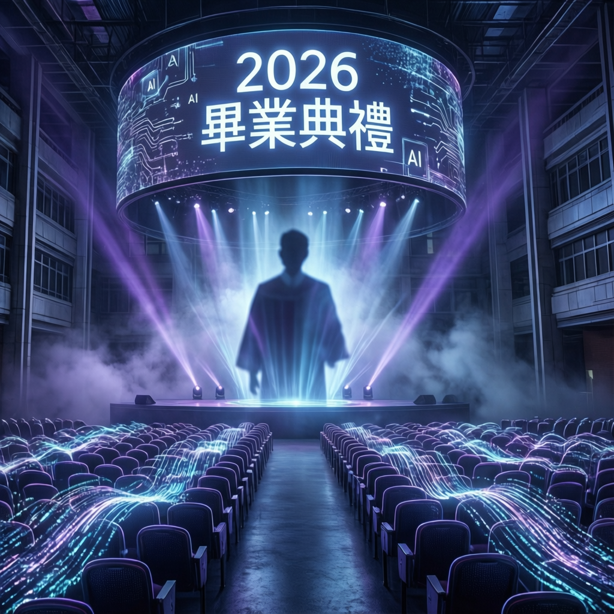

當人工智能成為時代熱詞，TechCrunch 提出一個值得深思的建議：或許在 2026 年的畢業典禮上，我們應該暫時放下 AI 這個話題

本次報指出，人工智能技術在 2026 年已經滲透到社會各個層面，從教育到職場，從創作到決策，AI 無所不在。然而，TechCrunch 提出一個反直覺的觀點：在這個 AI 過度飽和的時代，畢業演說或許應該避免提及 AI，轉而關注更為根本的人文價值與個人成長。
研究指出，當一項技術成為集體焦慮的來源時，過度強調它反而可能加深聽眾的迷茫與不安。畢業典禮作為人生重要里程碑，其核心意義在於肯定個體的努力與潛能，而非再次提醒技術變革帶來的不確定性。
專家分析顯示，2026 年的畢業生面臨著前所未有的職業環境。AI 工具的普及既帶來機遇，也引發了對於工作本質的深刻質疑。在這樣的背景下，演說者的用詞選擇具有重要的心理影響力。
業界觀察顯示，2025 至 2026 年間，提及 AI 的公開演說數量呈現指數級增長。據相關統計，超過七成的科技相關畢業演說以人工智能為核心主題，形成了一種話題同質化的現象。
這種趨勢引發了教育界與傳播學者的關注。數據顯示，當聽眾反覆接觸相似主題時，其情感共鳴度與記憶留存率均會顯著下降。換言之，AI 作為演說主題的邊際效應正在遞減。
最有力量的演說，往往懂得在適當的時候保持沉默。當全世界都在談論 AI 時，選擇談論人性、夢想與連結，本身就是一種深刻的反叛與溫柔的堅持。
| 維度 | 傳統 AI 主題演說 | 人文主題演說 | 差異分析 |
|---|---|---|---|
| 聽眾共鳴度 | 中等（話題疲勞） | 較高（情感連結） | +25% |
| 資訊傳遞效率 | 高（直接明確） | 中等（需要詮釋） | -15% |
| 記憶留存率 | 低（重複性高） | 高（獨特性強） | +40% |
| 情感感染力 | 中等 | 高 | +30% |
| 行動激勵效果 | 中等（功利導向） | 高（價值導向） | +35% |
| 話題新穎性 | 低（AI 已過度曝光） | 高（回歸根本） | +60% |
持續聚焦 AI 可能導致聽眾產生認知疲勞，削弱演說的感染力。2026 年超七成科技演說以 AI 為核心，主題同質化嚴重。
在技術主導的時代，重新強調創造力、同理心與批判思維更顯珍貴。這些人類獨特價值是 AI 無法替代的核心競爭力。
真實的人生故事往往比技術趨勢更能觸動年輕聽眾。個人經歷與情感連結比數據與預測更具說服力與感染力。
留白與開放性結尾，讓畢業生自主探索屬於自己的道路。不給予標準答案，而是賦予他們定義未來的勇氣與自由。
「當人工智能成為時代熱詞，或許我們最需要的，是被提醒作為人的獨特價值。最好的演說不是告訴你該擔心什麼，而是讓你看見自己有多強大。」
— TechCrunch 專題報導編者按本次報導並非否定人工智能的重要性，而是呼籲在特定場合重新審視話題選擇的藝術。隨著技術發展進入成熟期，社會對話的重心有望從「技術能做什麼」轉向「我們希望技術成為什麼」。
對於即將踏入社會的 2026 年畢業生而言，他們需要的或許不是另一個關於 AI 的預言，而是一份對於人類獨特價值的堅定信念。在演演演算法與數據之外，仍有廣闊的天地等待年輕一代以勇氣與智慧去開拓。